밭에서 오븐까지
걸어서 삼 분
2019년 봄
양평 서종면 칠백 평 텃밭 옆에
작은 빵집을 열었습니다.
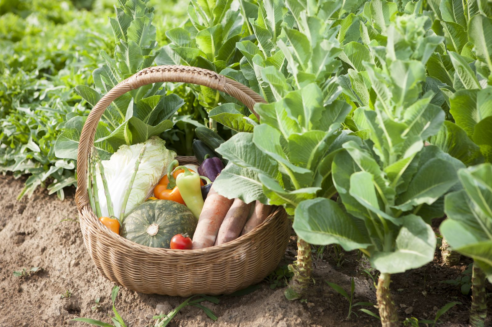
호밀은 반죽에 넣을 채소를 직접 기릅니다.
새벽에 거둔 채소를 씻어 찌고 갈아서
그날 아침 반죽에 바로 섞습니다.
2019년 봄
양평 서종면 칠백 평 텃밭 옆에
작은 빵집을 열었습니다.

호밀은 반죽에 넣을 채소를 직접 기릅니다.
새벽에 거둔 채소를 씻어 찌고 갈아서
그날 아침 반죽에 바로 섞습니다.
BEST LINEUP
봉투에 마우스를 올리면화면 가운데로 봉투가 오면 갓 구운 빵이 올라옵니다.
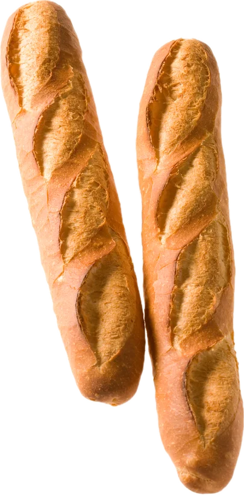
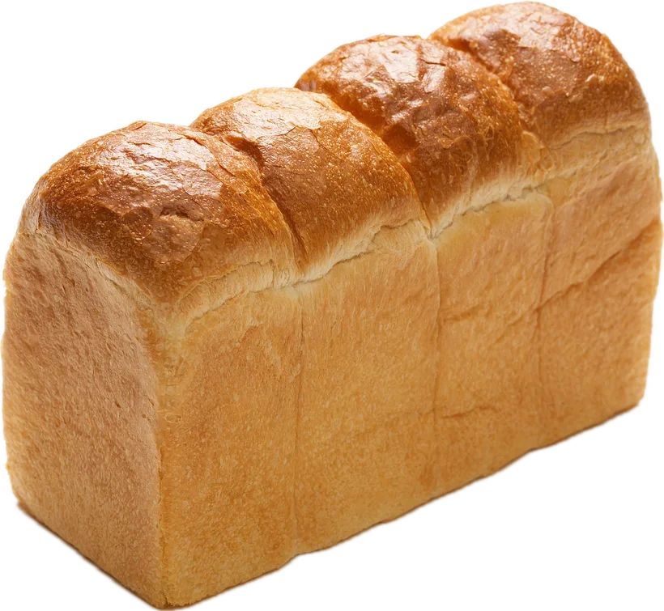
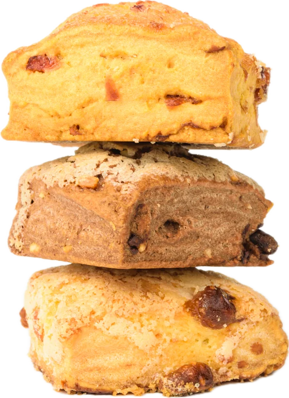
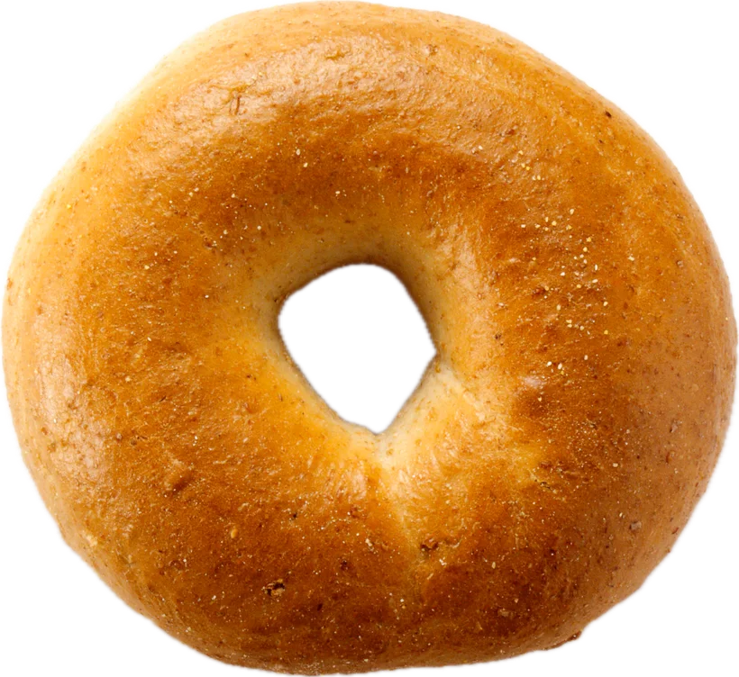
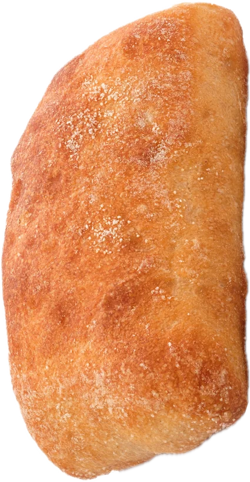
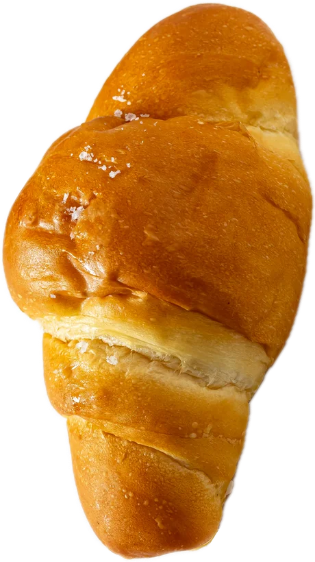
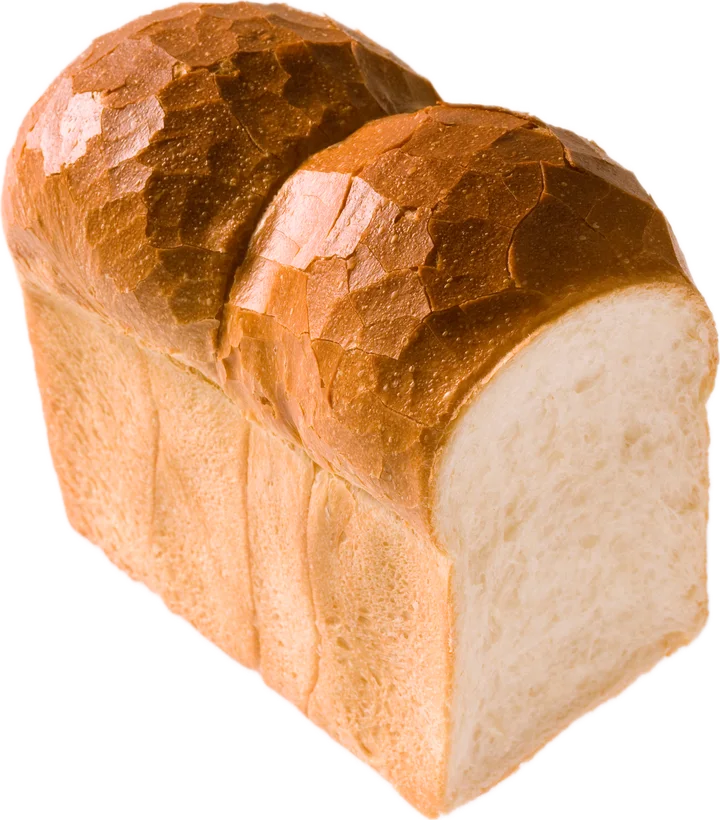
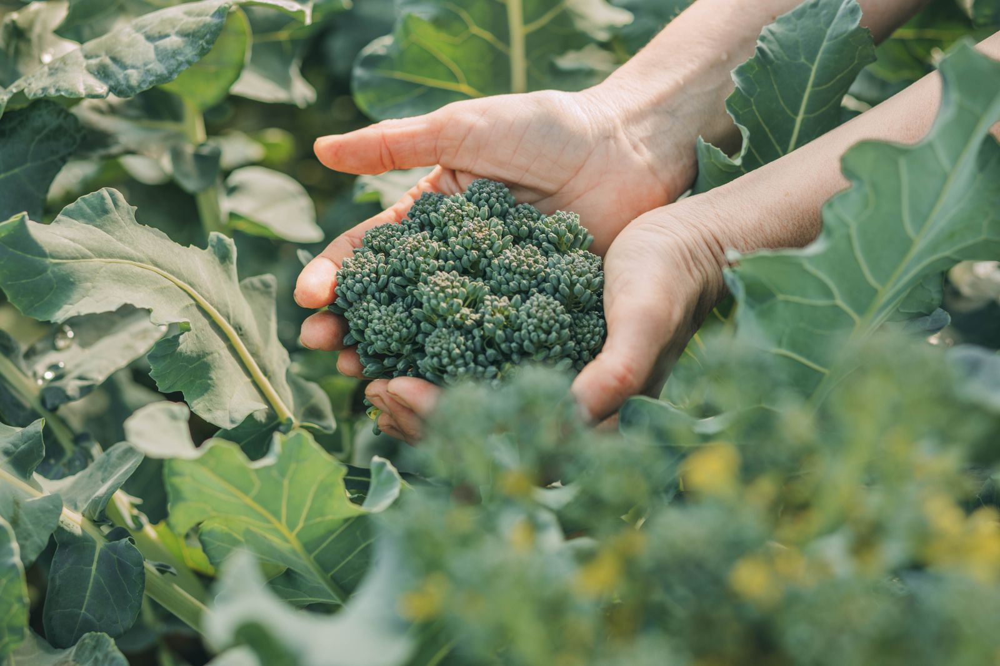
해가 뜨기 전에 그날 쓸 만큼만 밭에서 거둡니다.
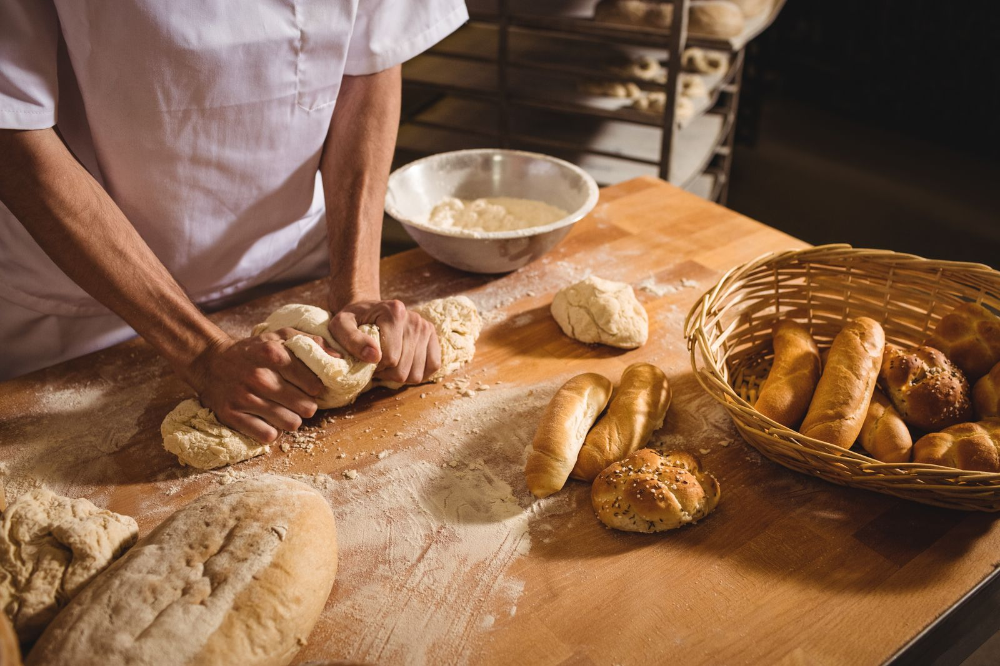
찌고 간 채소를 넣어 손으로 한 덩이씩 빚습니다.
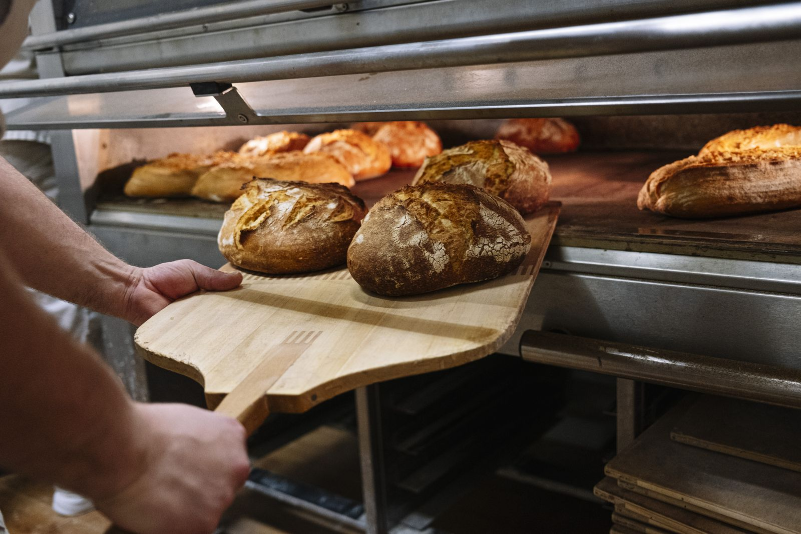
첫 빵이 나오면 문을 열고, 오후에 한 번 더 굽습니다.
밭에서 가장 맛있는 채소가 그 계절의 빵이 됩니다.
쑥과 냉이
쑥 크루아상, 냉이 포카치아
초당옥수수와 토마토
옥수수 통밀식빵, 토마토 치아바타
단호박과 당근
단호박 우유식빵, 당근 스콘
대파와 무
대파 소금빵, 무청 깜파뉴
경기 양평군 서종면 북한강로 418번길 26
매일 09:00 ~ 18:00, 화요일 휴무
서울 종로구 자하문로 11길 9, 1층
매일 08:30 ~ 20:00, 월요일 휴무
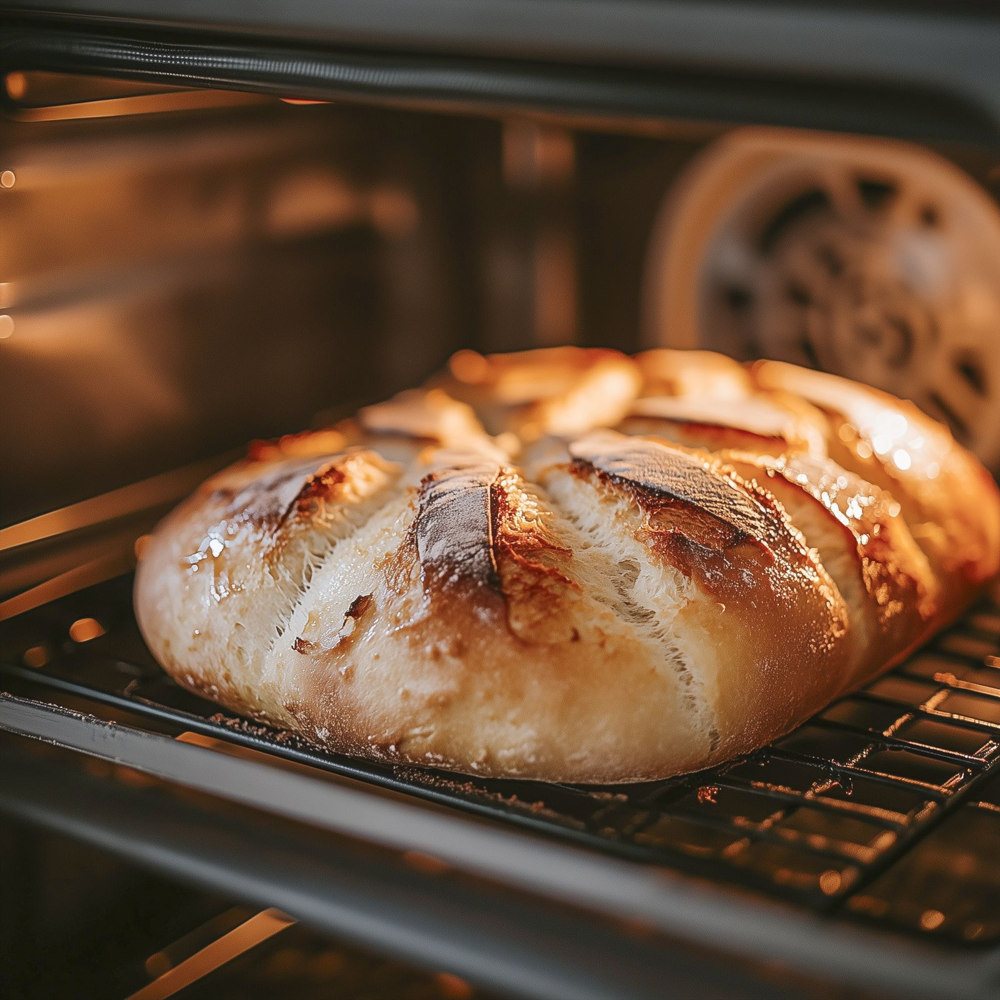